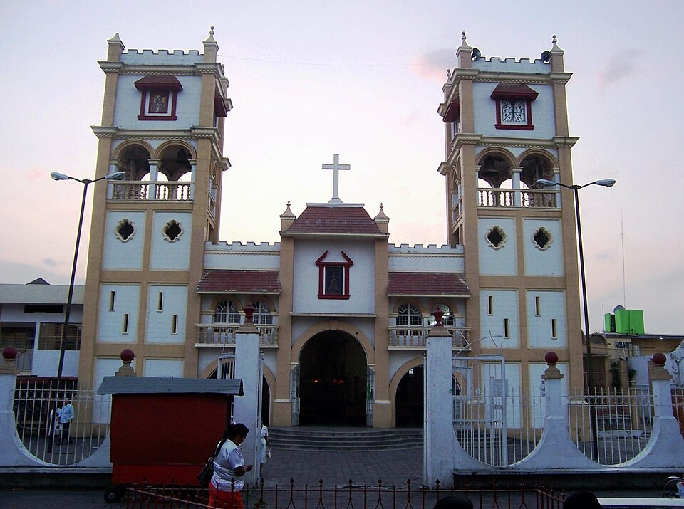
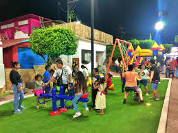
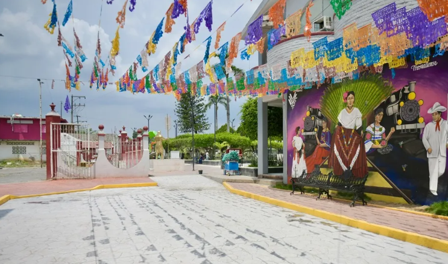
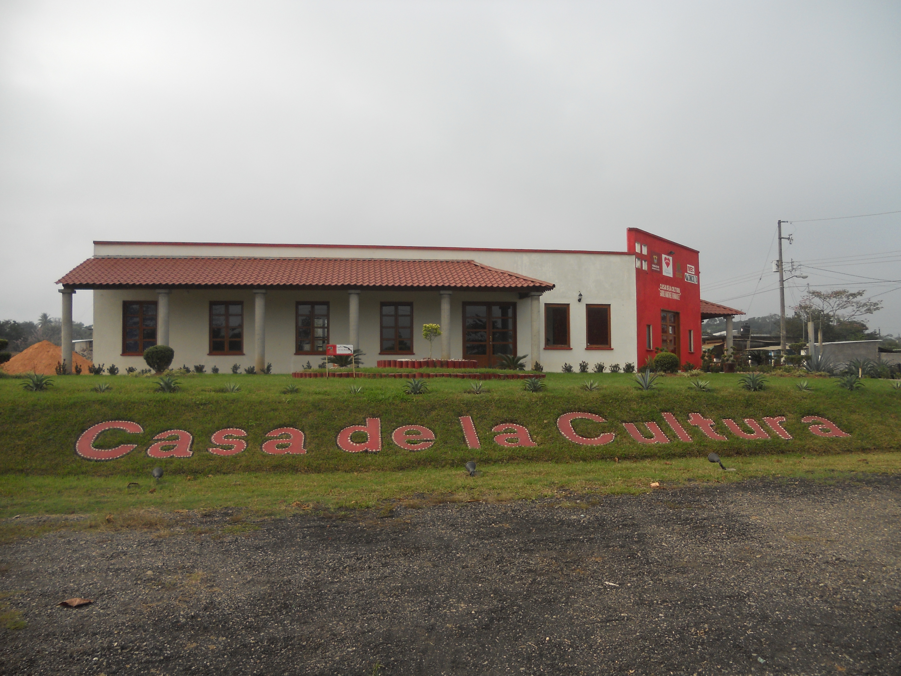
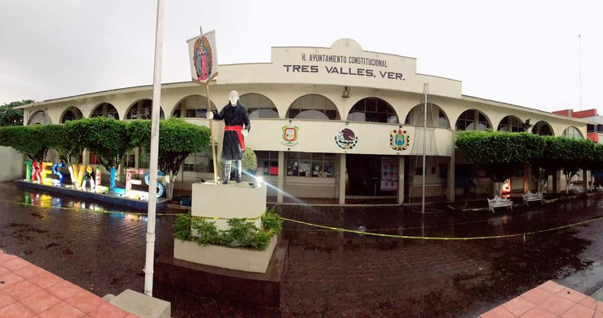

Iglesia Principal
Se consolidó durante el crecimiento urbano del municipio a mediados del siglo XX. Más que un templo, es un símbolo de identidad comunitaria, ya que en ella se celebran festividades importantes como patronales, bodas y eventos religiosos que reúnen a gran parte de la población. Su arquitectura sencilla pero imponente refleja la tradición de las iglesias veracruzanas.

Parque Central
El parque central surgió como parte del diseño urbano del municipio, funcionando desde sus primeras etapas como punto de reunión social. Con el paso del tiempo, se ha modernizado con áreas verdes, iluminación y espacios recreativos. Es el lugar donde se realizan eventos cívicos, ferias y celebraciones, convirtiéndose en el corazón social de Tres Valles.

Plaza Municipal
La plaza municipal está directamente ligada al desarrollo administrativo y social del municipio. Es un espacio donde convergen actividades culturales, políticas y recreativas. Durante fechas importantes, como fiestas patrias o eventos locales, se transforma en el escenario principal del municipio, reforzando el sentido de identidad y pertenencia.

Unidad Deportiva "Chavo Neme"
Fue creada como parte de iniciativas municipales para fomentar el deporte y la convivencia social entre jóvenes. Con el tiempo se ha convertido en uno de los espacios más utilizados, albergando torneos locales de fútbol, básquetbol y actividades físicas. Su importancia radica en que impulsa estilos de vida saludables y fortalece la comunidad

Complejo Deportivo
Representa una etapa más moderna en la infraestructura de Tres Valles. Fue desarrollado para ampliar las opciones deportivas del municipio, incorporando instalaciones más completas y funcionales. Aquí se realizan eventos, competencias y entrenamientos, consolidándose como un espacio clave para el desarrollo deportivo regional.

Tanque de Agua
El tanque elevado es una infraestructura fundamental que surgió con el crecimiento urbano del municipio para garantizar el suministro de agua potable. Con el tiempo, se convirtió en un ícono visual de Tres Valles, ya que es visible desde distintos puntos y funciona como referencia geográfica para los habitantes.

Casa de la Cultura
Fue creada con el objetivo de preservar y promover las expresiones artísticas y culturales del municipio. En este espacio se imparten talleres de danza, música, pintura y otras disciplinas. Además, sirve como sede de exposiciones y eventos culturales, fortaleciendo la identidad cultural de Tres Valles.

Palacio Municipal
Es el centro administrativo del municipio y uno de los edificios más importantes. Desde su construcción, ha sido el lugar donde se toman decisiones políticas y se gestionan servicios para la población. Su arquitectura refleja el estilo institucional típico de los municipios veracruzanos y representa el orden y la organización local.